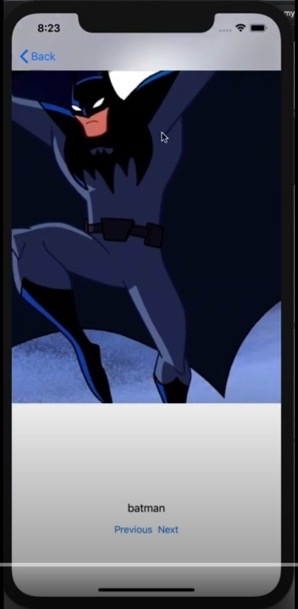
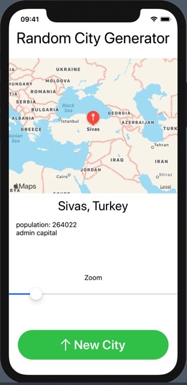
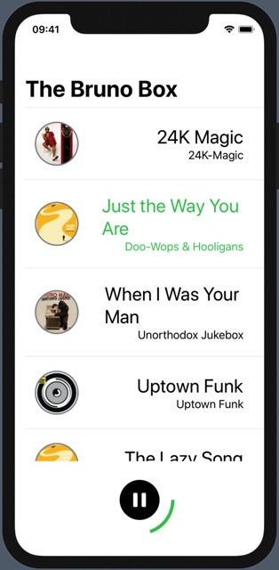
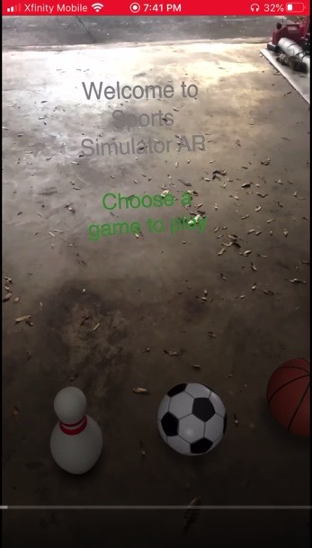

Geoffrey Dodd
New Media Certificate
What is it?
The New Media Certificate is a program in UGA's New Media Institute that allows students of all majors to learn about modern media and the applications of technology within it. Students are given many practical projects while having the opportunity to work on a capstone project with a real company at the end of the certificate.
What have I gotten from it?
I personally have really enjoyed the one class I have taken so far. As a computer science major, I will frequently work with various technology, but this certificate has broadened my view beyond just the tech side of things. I have learned to look at the products as a whole from appearance to tech stack to content and meaning. In addition, the people in the department, both faculty and students, have a lot of innovative new ideas alongside their bright energy. It has been very fun and inspiring to see everyone's creativity here.
Certificate Classes:
Rich Media Production
This course was aimed at developing functional and good-looking iOS apps. I learned both Swift and SwiftUI, which I plan on continuing to use well after graduation. Mobile development is a very important skill to have, as is Augmented Reality, or AR, development, which I had the opportunity to use for my final project. This, in particular was an extremely exciting area to work in because it is a relatively new field, and many expect it will quickly grow in the coming years.
Projects:
1. Swift Gallery
This was the first project I did in this class, and as an introduction to a new programming language / style, it helped me learn some of the fundamentals of Swift. This was also the only project I coded in basic Swift, as I took this class during the transition from Swift to SwiftUI. I also made a video going through it here.
2. Rando Loco
This was my midterm project, so we had spent some time learning both Swift and SwiftUI by this point. Rando Loco is a random location generator, which will automatically give you a randomly picked city from a large list, with some extra details such as population and whether it is a capital or not. I really liked learning how to dynamically include the apple maps within my own apps.
3. Bruno Box
This project was really fun because I learned how to use audio clips while listening to one of my favorite artists. Essentially, I created a list of Bruno Mars songs you can scroll through, listening to clips of your choice from the selection.
4. Sports Simulator AR
This was my final project assigned for this class. Using SwiftUI and Reality Composer, I was able to create an AR game where you could play soccer, basketball, or bowling wherever you are standing without breaking anything. I really appreciated this introduction to AR development because I would love to continue developing in that tech space moving forward.